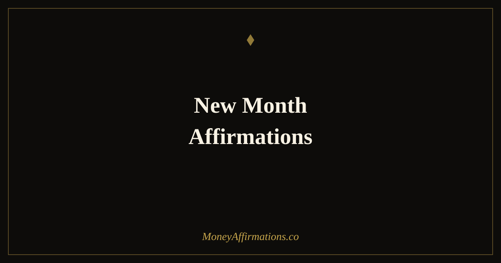

New Month Affirmations: 30 Statements to Start Every Month Powerfully

The first day of a new month is one of the most psychologically valuable moments in the financial calendar. Research in behavioural science describes this phenomenon as the "fresh start effect" — the tendency for people to take on new goals and shed previous setbacks at temporal landmarks. A new month resets the mental ledger. Whatever happened in the previous thirty days is over; what happens now is a new chapter. These 30 new month affirmations are designed to take full advantage of that reset energy. They anchor clear financial intentions, reinforce the beliefs that support consistent action, and help you approach the coming weeks with the settled confidence of someone who knows where they are going and why it matters.
What are new month affirmations?
New month affirmations are intentional, present-tense statements used at the start of each calendar month to set the mental and emotional tone for the weeks ahead. They are specifically designed to combine the psychological power of a fresh start with the directional clarity of a financial intention. Rather than vague positivity, they address specific beliefs about your capacity to earn, to manage, to grow, and to finish the month in a stronger position than you began it.
For a broader daily prosperity practice, explore the prosperity affirmations collection, which provides the foundation that monthly intention-setting builds upon.
30 new month affirmations
- I welcome this new month with clarity, intention, and the expectation of good things.
- I am beginning again with everything I have learned and none of the weight I no longer need.
- I set clear financial intentions for this month and I commit to honouring them with consistent action.
- I am fully capable of achieving every financial goal I have set for the weeks ahead.
- I bring focus and discipline to my money this month, and the results reflect that commitment.
- I release any financial missteps from last month and I approach this one with fresh determination.
- I attract new opportunities this month that align perfectly with my financial goals and values.
- I am consistent in my financial habits, and consistency is what produces lasting change.
- I manage my money with care and confidence throughout every week of this month.
- I am open to earning more than I expected this month, in ways I may not yet have anticipated.
- I begin this month knowing that every action I take is building toward the financial life I want.
- I handle financial challenges this month with calm, resourcefulness, and creative problem-solving.
- I review my finances regularly this month, staying informed and in control of my financial direction.
- I am grateful for the new month and for the thirty days of opportunity it places before me.
- I invest my time and energy this month in things that produce real and lasting financial value.
- I make decisions this month that my future self will thank me for.
- I am focused, energised, and fully committed to the financial targets I have set for this month.
- I allow this month to be different — better, clearer, more aligned with the prosperity I am building.
- I bring my best thinking, my strongest habits, and my clearest intentions to my finances this month.
- I save consistently this month, honouring my commitment to financial security and long-term freedom.
- I earn well this month because I show up fully, add genuine value, and believe in my own worth.
- I let go of comparison and focus on my own steady financial progress throughout this month.
- I trust the process of building wealth, and I follow through on the commitments I have made.
- I am patient with myself and persistent in my actions, knowing both are needed for real financial growth.
- I take at least one meaningful step toward financial freedom each week of this month.
- I use this month to build a habit or system that will serve my finances for years to come.
- I am the kind of person who finishes what they start financially, and this month is no exception.
- I celebrate my progress at the end of this month, however incremental, because progress is what matters.
- I am grateful for this fresh start and I use it wisely, intentionally, and with full commitment.
- This month, I move closer to financial freedom with every single day that I show up and choose growth.
How to use these affirmations
Use these affirmations on the first morning of each new month as a deliberate monthly ritual. The practice is most effective when paired with a brief financial review of the previous month — what went well, where you overspent or underearned, and what one habit you want to strengthen. This review creates the context that makes the affirmations land more concretely rather than floating as abstract aspirations.
Choose eight to ten statements that resonate most strongly with your current financial goals and challenges. Read them aloud, slowly, pausing after each one to let the statement settle. If you journal, write your three most important financial intentions for the coming month immediately after completing the affirmations — this bridges the mindset work directly into planning and action.
Some people find it useful to revisit their chosen affirmations briefly at the mid-month mark — around the fifteenth — as a recalibration check. The goal is not to generate anxiety about whether you are on track, but to renew your sense of direction and intention before the second half of the month begins.
Why monthly intention-setting is one of the most powerful financial habits
The "fresh start effect," documented by behavioural researchers Hengchen Dai, Katherine Milkman, and Jason Riis, shows that temporal landmarks — the first of a month, a birthday, a new year — meaningfully increase the likelihood that people will pursue new goals and disengage from previous failures. The calendar provides a natural psychological scaffolding for change.
Monthly intention-setting works particularly well for financial goals because most financial cycles operate on monthly rhythms: income, bills, budgets, savings targets, investment contributions. Aligning your mindset practice with the same cycle creates coherence between intention and execution. You are not setting abstract goals disconnected from the structure of your actual financial life.
There is also the matter of review and iteration. Monthly cycles are short enough to provide useful feedback quickly, but long enough to see whether a new habit or intention is actually changing behaviour. Daily practices can become mechanical; annual reviews are too infrequent to enable course correction. The monthly rhythm hits a productive middle ground — regular enough to build momentum, spaced enough to reveal genuine progress. When monthly affirmation practice is combined with a brief monthly financial review and a concrete intention for the coming period, it becomes one of the most practically grounded and consistently effective mindset tools available.
Tips to make them work faster
- Pair with a monthly financial review. Before reading your affirmations, spend ten minutes reviewing last month's key numbers — income, spending, savings. This grounds the affirmations in real data and makes the intention-setting that follows far more specific and honest.
- Write three concrete monthly intentions. After your affirmations, note three specific financial actions or outcomes you intend for the month. The affirmations set the belief; the intentions set the direction; daily action connects the two.
- Say them aloud with conviction. The physical act of speaking affirmations, particularly with a tone of genuine belief rather than rote recitation, activates auditory processing pathways in addition to visual ones, which deepens encoding.
- Place a reminder mid-month. Set a calendar note for the fifteenth to reread your chosen affirmations. This mid-point check-in refreshes your intention before momentum can drift in the second half of the month.
- Acknowledge what you achieved last month first. Beginning the ritual with a moment of genuine recognition for what you accomplished — however small — sets a tone of confidence and continuity rather than implying that last month was a failure to be erased.
Frequently Asked Questions
When exactly should I use new month affirmations?
The first day of each month is the natural moment — ideally in the morning before the day gains momentum. The psychological value of the calendar reset is real: the brain treats temporal landmarks (a new day, a new week, a new month) as natural starting points, which makes them unusually powerful moments for intention-setting. If you miss the first of the month, the second or third is perfectly fine. The ritual matters more than the precise timing. Pairing the affirmations with a brief monthly financial review — what went well last month, what you intend for this one — makes the practice significantly more grounded and effective.
Should I use the same affirmations every month or change them?
Both approaches have value, and the best answer depends on where you are in your practice. In the early months, using the same core set of affirmations builds familiarity and reinforces the neural pathways you are trying to establish — consistency matters more than variety at this stage. After three to six months, it is worth reviewing your chosen statements and updating any that no longer feel relevant or stretching. A few anchor statements that you return to every month, supplemented by two or three that reflect your current financial goals, is a flexible and effective structure. The key is that your chosen statements should feel honest, not hollow.
How do new month affirmations connect to financial goal-setting?
New month affirmations are the mindset layer of financial goal-setting. Goals tell you what you are aiming for; affirmations work on whether you genuinely believe you can reach them. Many people set financial goals that their underlying beliefs immediately undermine — they write down an income target while holding a quiet conviction that it is not really for people like them. Affirmations address this gap. The ideal practice is to set your monthly financial intentions first (concrete goals with numbers and dates), then use your affirmations to address the specific beliefs that most need strengthening to make those goals achievable. The two practices reinforce each other.
New month energy is a genuine psychological resource — use it deliberately. For the daily practice that sustains the momentum your monthly ritual begins, explore the prosperity affirmations collection and build the steady, compounding practice that turns monthly intentions into annual results.